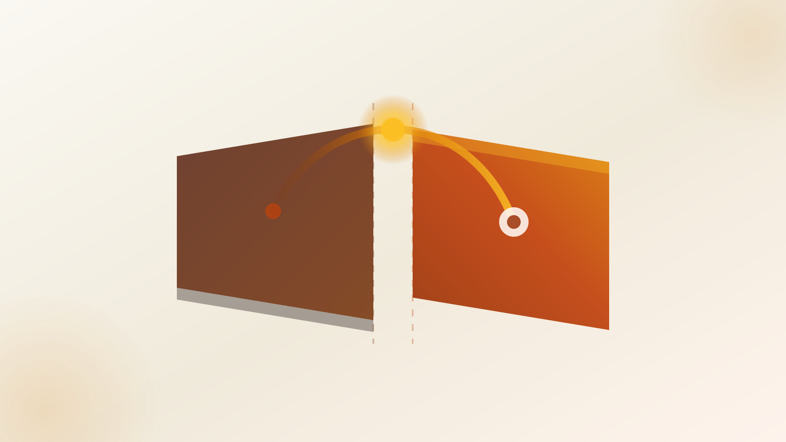

Firing a toast
across the seam
No toast library ships a server entrypoint. The queue is client memory in all three. A server mutation can only describe a toast and hand it across the boundary — and which channel it hands it through is decided by one question.

Pick your channel by one question: does the action redirect()? No → return {status, message, nonce} and toast in a nonce-guarded effect (or skip useActionState and await the action inside a transition). Yes → redirect() throws NEXT_REDIRECT and unmounts the caller before any return value arrives [3], so set a flash cookie before redirecting and drain it on the next render [9]. Real apps end up running both.
The constraint: 'use client' cuts the module graph in two
Elevation
A module carrying the directive — and everything it imports — is bundled and evaluated on the client [6]. All three libraries ship it as the first line of their ESM bundle, verified against the published dist. So <Toaster /> drops into a Server Component layout unchanged — but toast(), the imperative queue-push, is a client reference. A Server Function cannot call it.
Fig. 1 — the boundary. The server may hand across a description of a toast. It may never push one.
Practical reading: "RSC-safe" is table stakes and means less than it sounds. The directive buys you a <Toaster /> in app/layout.tsx without a hand-rolled wrapper. It does not make toast() callable from server code. Every server-origin toast is therefore a serialization problem, not a library feature — which is why the reference implementation is a blog post, not an API [1].
| Bill of materials | ⭐ | Ver. | gzip | 'use client' in dist | <Toaster/> in server layout | Server entrypoint |
|---|---|---|---|---|---|---|
| Sonner | ⭐ 13k | 2.0.7 | 9.4 kB [16] | ✓ [12] | ✓ “can be placed anywhere, even in server components such as layout.tsx” [11] |
✗ |
| react-hot-toast | ⭐ 11k | 2.6.0 | 4.8 kB [17] | ✓ [13] | ✓ | ✗ |
| react-toastify | ⭐ 13k | 11.1.0 | 9.7 kB [18] | ✓ [14] | ✓ v11 auto-injects its stylesheet | ✗ |
Client-boundary cost is the toaster subtree, not the layout: 4.8–9.7 kB gzip, evaluated once, no dependency drag. This is not a reason to pick between them.
shadcn/ui's generated components/ui/sonner.tsx re-exports the Toaster wrapped in next-themes' useTheme() — and shipped without its own 'use client', producing “Attempted to call useTheme() from the server” [15]. Re-exporting a client component from a directive-less module erases the boundary: the directive is per-module, not viral upward.
The junction: does the action redirect()?
Routing diagram
Fig. 2 — the critical junction. Everything downstream of it is determined by one if in the action.
useActionState + effect
Progressive enhancement survives. The action's return value rides back through the RSC payload.
⚠ Stale re-toast + StrictMode double-fire. Needs a nonce.await in a transition
Skip useActionState entirely. Toast in the same tick the promise resolves.
flash cookie
The only channel that survives a 303, a hard reload and a new tab.
⚠ Dynamic-renders the layout. Drain must be a Server Function.?toast= search param
The message lives in the URL. Refresh, back-nav or a shared link re-fires it.
✗ Rejected. Worst of the four.Channel A — the nonce is the whole pattern
Detail · no redirectuseActionState(action, initialState) returns [state, formAction, isPending]; the state is whatever the action returned, redelivered through the RSC payload [5].
'use server'
import { revalidatePath } from 'next/cache'
export type ActionState =
| { status: 'success' | 'error'; message: string; at: number }1
| null
export async function savePost(
_prev: ActionState,
formData: FormData,
): Promise<ActionState> {
const title = String(formData.get('title') ?? '')
if (!title) return { status: 'error', message: 'Title is required', at: Date.now() }
await db.post.create({ data: { title } })
revalidatePath('/posts')2
return { status: 'success', message: `Saved “${title}”`, at: Date.now() }
}'use client'
import { useActionState, useEffect, useRef } from 'react'
import { toast } from 'sonner'
import { savePost, type ActionState } from './actions'
export function PostForm() {
const [state, formAction, isPending] = useActionState<ActionState, FormData>(savePost, null)
const lastToasted = useRef(0)3
useEffect(() => {
if (!state || state.at === lastToasted.current) return4
lastToasted.current = state.at
const fire = state.status === 'success' ? toast.success : toast.error
fire(state.message)
}, [state])
return (
<form action={formAction}>
<input name="title" />
<button disabled={isPending}>Save</button>
</form>
)
}- 1
atis not decoration — it is the pattern. It is the nonce. Remove it and the code breaks in two opposite directions at once (callouts 2 and 4). - 2Stale re-toast.
revalidatePathre-renders the tree;statedeserializes into a new object with the same contents, the effect's dependency changes by identity, and the old message toasts again with no new submission. Robin Wieruch: “If the component re-renders, it might show an old toast message even if no new action was triggered” [2]. Next's own docs state the mechanism: “The UI is not unmounted, but effects that depend on data coming from the server will re-run” [4]. - 3A ref, not state. Refs survive StrictMode's simulated remount, so the guard doubles as the StrictMode fix — see the strip below.
- 4Missing toast (the opposite failure). Submit the same invalid form twice and the action returns a structurally identical object. Without a nonce nothing in the deps array changed → no second toast → the user thinks the button is dead.
React deliberately runs effects setup → cleanup → setup in development [23], so a naive useEffect(() => { toast(msg) }) double-toasts in dev — filed against Sonner as issue #322 ⭐ 13k and closed as expected behaviour [10]. Production runs the effect once per mount regardless. That is exactly the trap: it looks like a dev-only annoyance — and the stale re-toast variant is not dev-only at all.
Channel B — delete the effect
Detail · no redirect, no progressive enhancementIf you don't need progressive enhancement, the effect is pure ceremony. await the action and toast in the same tick.
'use client'
import { useTransition } from 'react'
import { toast } from 'sonner'
import { deletePost } from './actions'
export function DeleteButton({ id }: { id: string }) {
const [isPending, startTransition] = useTransition()
return (
<button
disabled={isPending}
onClick={() =>
startTransition(async () => {
const res = await deletePost(id) // plain serializable result, never throws to the client
res.ok ? toast.success('Post deleted') : toast.error(res.message)5
})
}
>
Delete
</button>
)
}- 5No effect, no nonce, no StrictMode double-fire, no stale replay. This is the “direct promise awaiting” answer the Next.js discussion converges on [7] ⭐ 141k. The cost: the button needs JS (no no-JS form fallback), and the action must not
redirect().
next-safe-action ⭐ 3.0k packages this with typed callbacks, so the toast site is declarative rather than an effect [25]:
const { execute } = useAction(createPost, {
onSuccess: ({ data }) => toast.success(`Created: ${data.name}`),
onError: ({ error }) => toast.error(error.serverError ?? 'Invalid input'),
})Ref: next-safe-action · useAction [22]
Channel C — the flash cookie
Detail · the redirect caseredirect() throws a NEXT_REDIRECT error and terminates rendering of the segment; in a Server Action it serves a 303 [3]. Three consequences, all fatal to Channels A and B:
- 1The action never returns →
useActionStatestate never updates → the effect never fires [7] ⭐ 141k. - 2The client component that owns the effect is unmounted by the navigation anyway.
- 3Because it throws,
redirect()must be called outside anytryblock — atry/catcharound your mutation will swallow the redirect [3].
The workaround the ecosystem settled on — and the one Next's own discussion threads recommend — is to set a cookie before redirecting and read it on the next render [9] ⭐ 141k [8]. Cookies are the only channel that survives a 303, a hard reload, and a new tab [1].
import 'server-only'
import { cookies } from 'next/headers'
export type Flash = { status: 'success' | 'error'; message: string }
export async function setFlash(flash: Flash) {
const store = await cookies()
// random name, not a fixed key: two flashes in one request must not overwrite each other
store.set(`flash-${crypto.randomUUID()}`, JSON.stringify(flash), {6
path: '/',
maxAge: 60,
httpOnly: true,
sameSite: 'lax',
})
}
export async function readFlash() {
const store = await cookies()
return store
.getAll()
.filter((c) => c.name.startsWith('flash-') && c.value)
.map((c) => ({ id: c.name, ...(JSON.parse(c.value) as Flash) }))
}'use server'
import { redirect } from 'next/navigation'
import { setFlash } from '@/lib/flash'
export async function createPost(formData: FormData) {
const post = await db.post.create({ data: { title: String(formData.get('title')) } })
await setFlash({ status: 'success', message: 'Post created' })
redirect(`/posts/${post.id}`) // last statement — it throws7
}import { Toaster } from 'sonner'
import { readFlash } from '@/lib/flash'
import { FlashToaster } from './flash-toaster'
export default async function RootLayout({ children }: { children: React.ReactNode }) {
const flashes = await readFlash()8
return (
<html lang="en">
<body>
{children}
<Toaster />
<FlashToaster flashes={flashes} />
</body>
</html>
)
}'use client'
import { useEffect, useRef } from 'react'
import { toast } from 'sonner'
import { clearFlash } from './flash-actions' // 'use server'
export function FlashToaster({ flashes }: { flashes: Array<{ id: string } & Flash> }) {
const fired = useRef(new Set<string>())
useEffect(() => {
for (const f of flashes) {
if (fired.current.has(f.id)) continue
fired.current.add(f.id)
;(f.status === 'success' ? toast.success : toast.error)(f.message)
void clearFlash(f.id) // must be a Server Function; see below9
}
}, [flashes])
return null
}- 6The random suffix (rather than a single
flashkey) is Build UI's trick — it lets multiple messages queue in one request without clobbering each other [1]. - 7
redirect()is the last statement, outside anytry. Everything after it is unreachable — it throws. - 8⚠ The buried bill. Reading
cookies()here opts every route into dynamic rendering —cookiesis a request-time API: “Using it in a layout or page will opt a route into dynamic rendering” [4]. A static-first app that reads flash cookies inapp/layout.tsxis no longer static-first. - 9You cannot
cookies().delete()while rendering a Server Component: “HTTP does not allow setting cookies after streaming starts, so you must use.setin a Server Function or Route Handler” —.deletelikewise [4]. So the drain must be a client-triggered Server Function, not part of the read. Build UI hides the latency withuseOptimistic[1].
Push the cookie read into its own <Suspense>-wrapped server component so only that subtree is dynamic — or drop httpOnly and read the flash cookie client-side.
Selection schedule
Pick by column, not by taste| Channel | Progressive enhancement | Survives redirect() |
Survives reload / new tab | Effect needed | Main hazard |
|---|---|---|---|---|---|
A · useActionState + effect + nonce |
✓ | ✗ | ✗ | ✓ | Stale re-toast without a nonce [2] |
B · await in startTransition |
✗ | ✗ | ✗ | ✗ | None; needs JS [7] |
| C · flash cookie | ✓ | ✓ | ✓ | ✓ (to drain) | Dynamic-renders the layout [4] |
D · ?toast= param |
✓ | ✓ | ✓ ⚠ too well | ✓ | Re-toasts on refresh / share [20] |
Real apps end up with B for in-place mutations + C for anything that redirects. A is the default the docs nudge you toward — and the one that generates the bug reports. D is listed as a canonical option in the Next.js discussion [8]; the React Router thread flags exactly why not: “URL parameters: refreshes can re-trigger toasts (unreliable)” [20].
The toasters render an empty container during SSR (their queue lives in a client store that is empty on the server), so the toaster itself is not a hydration-mismatch source. The mismatches come from what you put in the toast: server-formatted dates, locale, Date.now() in the message body [24]. Keep flash payloads as opaque strings serialized on the server; format nothing client-side.
The part that already exists: React Router 7 session.flash()
Comparative detail
Same tension — the mutation runs on the server, the toast is client state — but the framework has a first-class channel, inherited from Rails: a value written with session.flash(key, value) is deleted the first time it is read [19].
export async function action({ request }: Route.ActionArgs) {
const session = await getSession(request.headers.get('Cookie'))
const post = await createPost(await request.formData())
session.flash('toast', { status: 'success', message: 'Post created' })
return redirect(`/posts/${post.id}`, {
headers: { 'Set-Cookie': await commitSession(session) },10
})
}export async function loader({ request }: Route.LoaderArgs) {
const session = await getSession(request.headers.get('Cookie'))
const toast = session.get('toast') // reading consumes it11
return data({ toast }, { headers: { 'Set-Cookie': await commitSession(session) } })
}Structurally identical to Channel C — a cookie carrying the message across a redirect — with three differences that matter:
- 10Explicit headers. You must re-
commitSessionin the loader or the deletion never reaches the browser. ⚠ And the docs warn about nested routes: “When usingsession.flash()orsession.unset(), you need to be sure no other loaders in the request are going to want to read that, otherwise you'll get race conditions… if another loader wants a flash message, use a different key” [19]. - 11Self-destructing. The flash is consumed on read, so the “who deletes the cookie” problem that forces Next into a client-triggered Server Function [4] simply does not arise. Reload cannot re-toast [20] ⭐ 57k.
- 12Still a
useEffecton the client. The root component watchesloaderData.toastand callstoast()— same StrictMode double-fire, same need for a dedupe key. remix-toast ⭐ 262 packages the whole loop (redirectWithSuccess,getToastreturning{ toast, headers }) for React Router v7 [21].
Net: React Router's loader/action model gives you a place for server-origin UI messages. Next's RSC model gives you a return value that a redirect throws away. The Next equivalents are all reconstructions of flash.